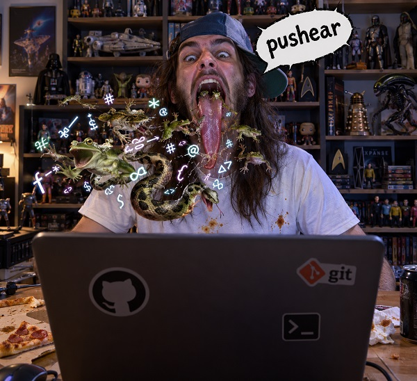

Anglicismos en programación
October 4, 2026 | ES Ver en LinkedIn
Miguel García
Palabros importados del inglés, frecuentes en desarrollo de software. Cómo de mal los utilizamos, y alternativas menos hirientes en español.
Variables, clases, métodos, funciones, todo esto y mucho más solemos escribirlo en inglés, por norma.
A mí particularmente, me chirría mucho ver una variable en español, cuando el lenguaje en sí se escribe en inglés:
for(i = 0; i < count(destinatarios); ++i) {
resultado = enviarEmail(destinatarios[i], asunto, cuerpoHTML);
if(resultado !== true) {
horrorAlgoSalioMal(resultado);
break;
}
}En inglés hace lo mismo, pero ya no parece la ONU en un día de asamblea.
Pero en lo que me quiero centrar hoy, es en los anglicismos que utilizamos para referirnos a acciones que realizamos, día sí, día también, cuando programamos (que ya no se programa nada, ya, ya).
Y, sobre todo, quiero llamar la atención sobre cuando los utilizamos mal, en el sentido literal de retorcer el lenguaje como si fuera el pescuezo de "ése" que no nos cae nada bien. Paz y amor, por favor.
Por ejemplo, cuando a la acción de poner código en producción, se le llama "deployar".
Que vale, que en inglés se dice deploy, deployment, pero deployar, por faplis, que tenemos una palabra muy bonita y útil para esto: desplegar.
He desplegado el backend.
He deployado el backend.
Tenemos un claro vencedor.
Me vale hasta he subido el backend.
Crashear. Se ha crasheado la app.
Se ha roto, cascao, congelado, muert0, flipao, vuelto tonta. Será por riqueza del lenguaje.
Pushear. He pusheao el bugfix. Doblete. Subir me vale. Subir la solución al error, también.
Bug. Disfrázalo como quieras, pero es un error. Una liada. La has cag...
Link. Enlace.
Password. Contraseña. La que tienes apuntada a boli en la mesa, ésa.
Open source. Gratis, tú lo que quieres decir es gratis, open source es otra cosa.
Submitear. Enviar, le has dado al botón de enviar el formulario.
Y ya que estamos: form. Casi, termina la palabra con ulario.
Soy un hacker. Tus ganas.

Créditos imagen: ChatGPT y algunos desvaríos propios.